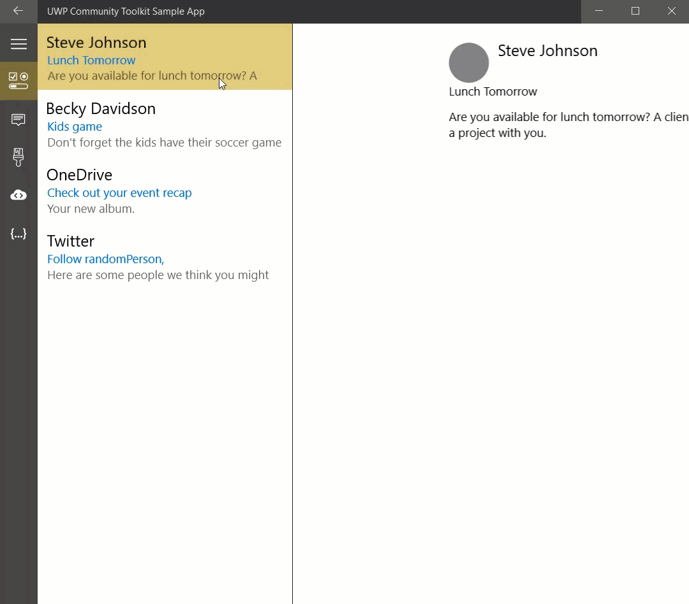

ListDetailsView (Archived)
Warning
This document has been archived and the component is not available in the current version of the Windows Community Toolkit.
While there are no immediate plans to port this component to 8.x, the community is welcome to express interest or contribute to its inclusion.
For more information:
- GitHub discussion for ListDetailsView port
- Community Toolkit GitHub repository
- Documentation feedback and suggestions
Original documentation follows below.
The ListDetailsView control presents items in a list/details pattern. It shows a collection of items within the "list panel" and the details for that item within the "details panel". The ListDetailsView reacts to the width it is given to determine if it should show both the list and details or just one of the two. There is a dependency property ViewState or an event ViewStateChanged that can be used to track which state the control is in.
Platform APIs:
ListDetailsView,ListDetailsViewState
Syntax
<controls:ListDetailsView
ItemsSource="{Binding Items}"
ItemTemplate="{StaticResource ListTemplate}"
DetailsTemplate="{StaticResource DetailsTemplate}"
NoSelectionContentTemplate="{StaticResource NoSelectionContentTemplate}"
CompactModeThresholdWidth="640" />
Sample Output

Multi Screen Devices
This control is spanning-aware and adapts it self for multi screen devices. For this internally the Two-pane view is used.
BackButtonBehavior
When in compact mode, the ListDetailsView will either show the List or the Details view, not both. If an item is selected, the control will navigate forward to the Details view. If the CurrentItem is set to null, the control will navigate back to the List view.
If there is a Frame in the parent visual tree, the ListDetailsView control will use the Frame navigation events to transition from the Details view to the List view. If the host Frame is attempting back navigation while the Details view state is active, the ListDetailsView will transition to the the List view and cancel the back navigation.
To help with back navigation, The ListDetailsView can handle back button visibility of the SystemNavigationManager back button, a parent NavigationView back button, or an inline back button. Use the BackButtonBehavior property to control the behavior:
Automaticwill let the control decide which back button to make visible/enabled.- If the system back button is visible the control won't use any other buttons
- Else, if the control parent tree contains a Frame hosted in a NavigationView, the NavigationView back button will be used
- Otherwise, an inline button will be used
Systemwill use the system back button controlled by the SystemNavigationManager. The control will make the button visible (if not already visible) when in the Details view and restore the visibility when transitioning to the List view. This is the default value.Inlinewill use a back button built into the controlManualwill not enable any back buttons (if using a custom button).
Sample Project
ListDetailsView Sample Page Source. You can see this in action in the Windows Community Toolkit Sample App.
Default Template
ListDetailsView XAML File is the XAML template used in the toolkit for the default styling.